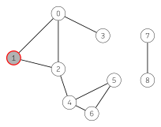
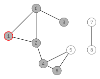
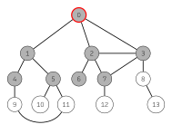
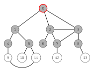
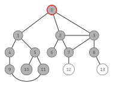
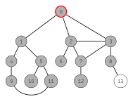
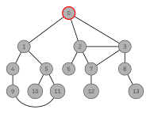

Informatique et Calcul Scientifique
Cours 10
Les sept ponts de Königsberg

- Existe-t-il un chemin à travers la ville qui emprunte chaque pont exactement une fois ?
- En 1736, Euler prouva qu’il n’existe pas de tel chemin. Ce résultat est considéré comme le début de la théorie des graphes.
Graphes
- Un graphe est une structure mathématique appropriée pour représenter des relations entre des objets.
- Un graphe consiste en un ensemble de sommets reliés par des arêtes.

Graphe : définition
Un graphe \(G = (V, E)\) est défini par son ensemble \(V\) de sommets (vertices en anglais) et son ensemble \(E\) d’arêtes (edges en anglais).
Une arête \((u, v)\) est une paire de sommets, ordonnés ou non.

- À partir de là, il y a plusieurs types de graphe.
Graphe dirigé
- Si les arêtes d’un graphe \(G\) sont des paires ordonnées de sommets, le graphe est dit dirigé.
- Le graphe ci-contre contient l’arête \((A,B)\) mais pas l’arête \((B,A)\).
- On dira que \(B\) est voisin de \(A\) ou adjacent à \(A\) (mais \(A\) n’est pas voisin de \(B\)).
- Les graphes dirigés sont appropriés pour représenter des situations de flux ou de déplacement entre une source et une destination.

Graphe non dirigé
- Si les arêtes d’un graphe \(G\) sont des paires non ordonnées de sommets, le graphe est dit non dirigé.
- Dans le graphe ci-contre, \((A,B)\) et \((B,A)\) dénotent la même arête.
- \(A\) et \(B\) sont voisins l’un de l’autre ou adjacents l’un à l’autre.
- Les graphes non dirigés sont appropriés pour représenter des relations symétriques entre des objets.
Graphe pondéré
- Un graphe (dirigé ou non) est dit pondéré si un poids est associé à chaque arête du graphe.
- Selon les applications, les poids peuvent être des nombres entiers ou réels, de n’importe quel signe.
- Les graphes pondérés sont appropriés par exemple pour représenter le coût d’emprunter un certain chemin ou de prendre une certaine décision.

B. Liste d’adjacence
- Pour représenter \(G\) avec des listes d’adjacence, on stocke, pour chaque sommet de \(G\), une liste de ses voisins.
- En Python, on peut stocker ces données dans un dictionnaire dont les clés sont les sommets et les valeurs les listes des voisins des sommets.
-
Pour le graphe du haut :
{0:[1], 1:[2,3], 2:[3], 3:[2]} -
Pour le graphe du bas :
{0:[1], 1:[0,2,3], 2:[1,3], 3:[1,2]} - Pour un graphe pondéré, on peut stocker des tuples (sommet, poids) dans la liste des voisins.

-
On pourrait aussi utiliser une liste où l’élément
iest la liste des voisins du sommeti, mais un dictionnaire nous permet d’avoir des sommets nommés autrement que \(0,1,\ldots,n-1\).
Listes Python
- Rappel du Cours 7 (modèle de computation) : une liste est stockée en mémoire comme un bloc contigu de références aux éléments de la liste.
- Une référence est l’adresse en mémoire de l’élément auquel elle se réfère.
- Chaque référence occupe un bloc de taille constante en mémoire.

Listes Python : accéder à un élément
- Pour accéder à un élément
L[i], il faut :- calculer l’adresse de la référence à l’objet correspondant ;
- accéder à l’élément en mémoire.
- Ces opérations se font en temps constant. On peut donc accéder à un élément
L[i](pour le lire ou le modifier) en temps \(\Theta(1)\).
Listes Python : append et pop
- Pour effectuer une opération
L.append(), il faut :- modifier la longueur de la liste ;
- insérer une référence à un nouvel objet en fin de liste.
-
On peut donc considérer que ces deux opérations se font en temps constant1, et donc qu’on peut effectuer une opération
L.append()en temps \(\Theta(1)\). -
De même, on peut effectuer une opération
L.pop()en temps constant.
Listes Python : insert et remove
- Pour insérer un élément à l’index
iavecL.insert(i, x), il faut décaler vers la « droite » tous les éléments à partir de l’indicei.
-
De même, pour enlever un élément avec
L.remove(x),L.pop(i)oudel, il faut décaler vers la « gauche » tous les éléments suivants. - Ceci est nécessaire afin de maintenir la propriété de l’accès en temps constant.
- Pour une liste de taille \(n\), les opérations d’insertion ou de suppression à un index arbitraire prennent donc un temps \(\Theta(n)\) au pire des cas.
Exemple : graphe dirigé
Le seul chemin entre \(0\) et \(4\) est 0, 2, 4.

- Le sommet 4 est à distance 2 du sommet 0.
- Le seul chemin entre \(4\) et \(0\) est 4, 5, 3, 0.
- Le sommet 0 est à distance 3 du sommet 4.
Parcours en largeur (BFS)
Le parcours de \(G\) en largeur (Breadth-First Search) à partir d’un sommet \(s\) explore les sommets de \(G\) en commençant par \(s\), puis par les sommets à distance 1 de \(s\), puis les sommets à distance 2, …






BFS : parcours
a_parcourir = [0] 
a_parcourir = [1, 2, 3] 
a_parcourir = [2, 3, 4, 5] 
a_parcourir = [3, 4, 5, 6, 7] 
a_parcourir = [4, 5, 6, 7, 8] 
a_parcourir = [5, 6, 7, 8, 9] 
a_parcourir = [6, 7, 8, 9, 10, 11] 
a_parcourir = [7, 8, 9, 10, 11] 
a_parcourir = [8, 9, 10, 11, 12]

a_parcourir = [9, 10, 11, 12, 13]

a_parcourir = [10, 11, 12, 13] 
a_parcourir = [11, 12, 13] 
a_parcourir = [12, 13]

a_parcourir = [13]

a_parcourir = []

BFS : ordre de parcours
L’ordre exact dans lequel BFS visite les sommets dépend de l’ordre des voisins dans chaque liste d’adjacence : pour un même graphe, deux dictionnaires différents peuvent donner deux parcours différents.
Cependant, tous les parcours BFS valides respectent la règle suivante :
Si la distance entre \(s\) et \(u\) est plus petite que la distance entre \(s\) et \(v\), \(u\) apparaîtra avant \(v\) dans le parcours.
- Exemple avec
s = 0sur le même graphe :
G = {0:[1,2], 1:[0,3], 2:[0,4], 3:[1], 4:[2]}→ parcours
0, 1, 2, 3, 4G = {0:[2,1], 1:[0,3], 2:[0,4], 3:[1], 4:[2]}→ parcours
0, 2, 1, 4, 3
- Les deux respectent bien la règle : distance 0, avant distance 1, avant distance 2.